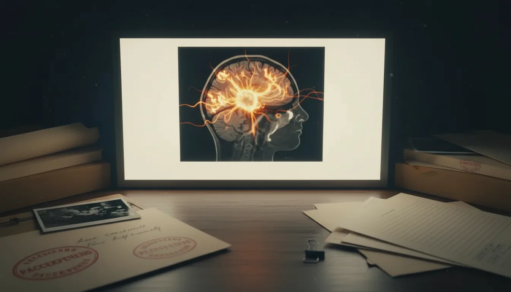
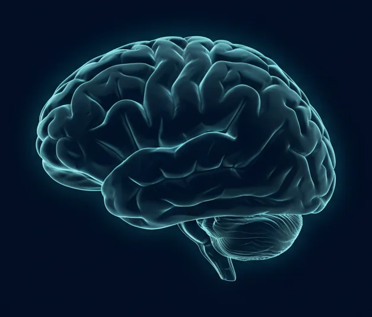
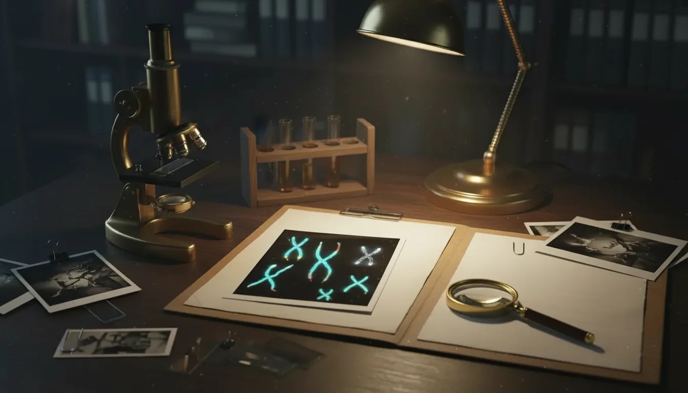
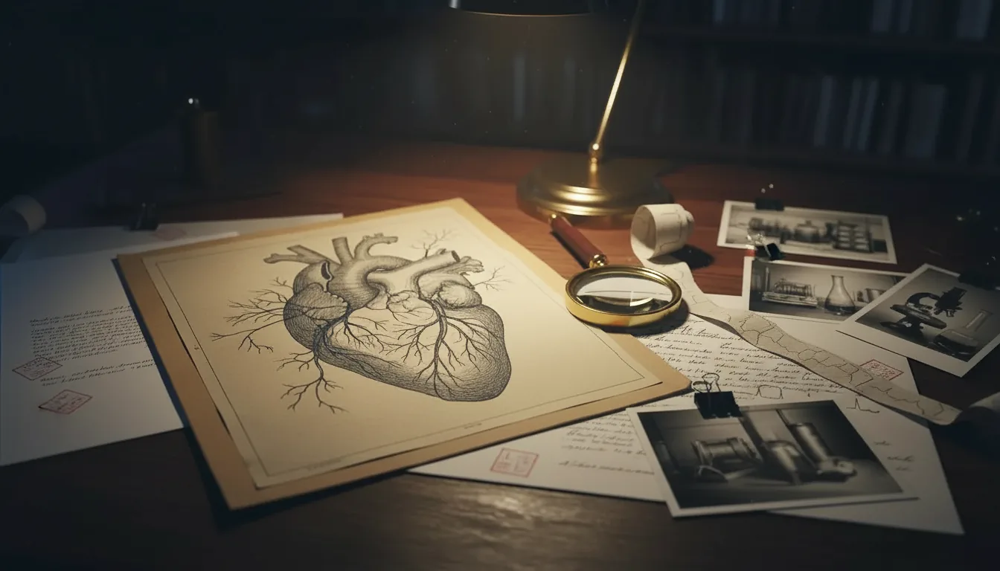
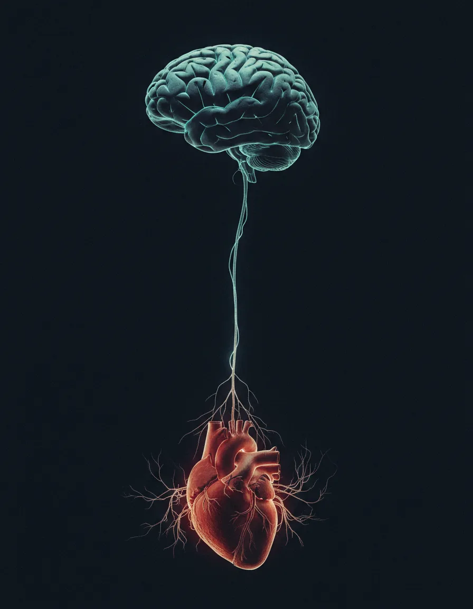
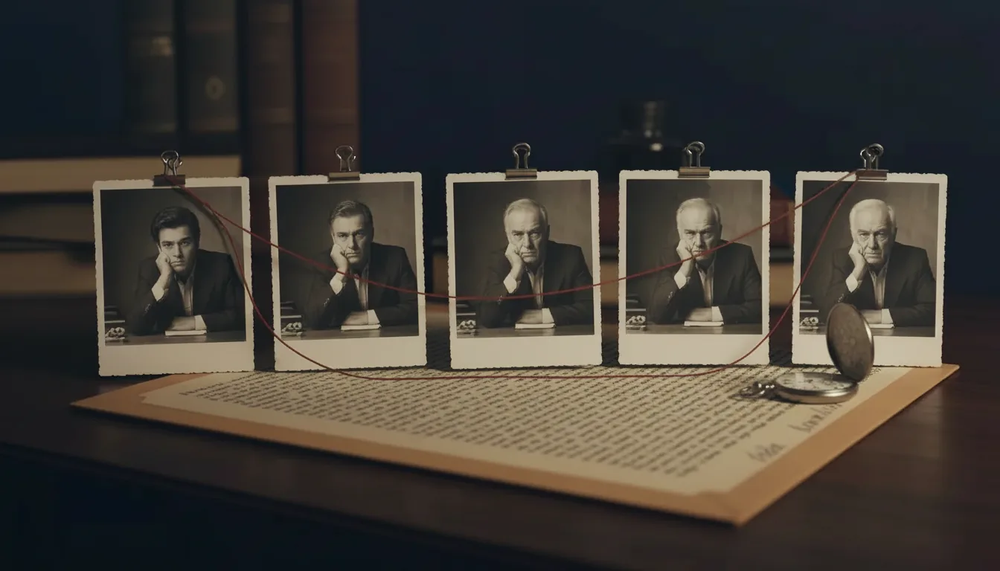
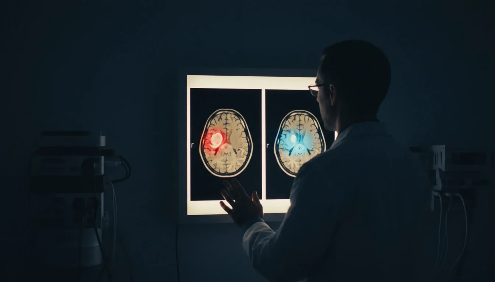

Мозг - это операционная система жизни.
Не мотивация, не дисциплина и не привычки.
Когда им не управляешь - он управляет тобой. И делает это жёстко.
ДеньгиЭто он решает, сколько денег на счёте, потому что именно он генерирует тревогу, из-за которой откладываются решения, упускаются возможности и выбирается «безопасное» вместо эффективного.
ТелоЭто он решает, как себя чувствует тело, потому что именно он запускает гормоны стресса, подавляет иммунитет, разгоняет воспаление и удерживает лишний вес, круглосуточно и ни у кого не спрашивая разрешения.
РешенияЭто он решает, какие решения принимаются, в бизнесе, в отношениях и в жизни в целом. И пока он в режиме шума - решения будут из страха, а не из ясности.
ЭнергияЭто он решает, есть ли энергия, или к вечеру не остаётся сил даже на разговор. Потому что он сжигает 20% всей энергии на бессмысленный внутренний монолог и разрушающие паттерны.
УверенностьЭто он решает, есть ли уверенность, или бесконечные «а вдруг», «а что подумают», «а вдруг не получится».
Неуправляемый мозг - это кукловод. А человек – марионетка, которая ДУМАЕТ, что принимает решения сама. Но на самом деле, ВЫПОЛНЯЕТ программу, записанную годами тревоги, страха и автоматических реакций.
Человек, который управляет мозгом, управляет всем: деньгами, здоровьем, временем, отношениями, собой и жизнь с ним «не случается», потому что он главный.
Но есть рычаг, который эту способность блокирует. У 90% людей и прямо сейчас. Это конкретный нейробиологический механизм. Был открыт в 2001 году, а изучался военными с 1970-х. DARPA потратило на него $2 миллиарда. ЦРУ засекречивало результаты до 2003 года.
Но вам о нём не рассказали. Потому что человек, который знает, как работает этот рычаг, перестаёт быть управляемым.
Перестаёт покупать лишнее.
Тревожиться по расписанию.
Откладывать жизнь на понедельник.
Те, кто этот рычаг нашли и переключили, живут иначе. Просто потому, что перестали быть марионетками своего мозга.
В этой статье, 7 фактов: что это за рычаг, как он работает, что отнимает и как его переключить.
Читайте внимательно. Эта информация меняет всё.
Счастье заблокировано на уровне мозга. И никакие деньги, отношения или успех его не разблокируют
Есть вещь, о которой почти никто не говорит вслух, хотя именно она является фундаментом, на котором держится всё остальное.
Счастье
Именно счастье. И не то, которое «когда-нибудь потом», когда заработаю денег, куплю дом, рожу детей… А то, которое прямо сейчас, в этом теле и в эту секунду. Ощущение: я на месте, я - это Я. Жизнь хороша.
Многие считают такое состояние приятным дополнением к успеху. Устроено всё наоборот: это база, от которой зависит буквально всё.
Когда человек в состоянии внутреннего покоя, ресурса и наполненности, мозг работает принципиально иначе. Неокортекс, где рождаются идеи, стратегии и видение, активен, поэтому человек замечает возможности, принимает точные решения и действует из ясности. Рептильный мозг - центр выживания, спокоен. Не орёт «опасность!», не запускает панику, не заставляет спасаться от угроз, которых нет.
В этом состоянии гормональный фон здоровый: кортизол низкий, серотонин и дофамин в балансе, DHEA активен. Тело восстанавливается, иммунитет работает, вес приходит в норму сам, энергии хватает на всё. Деньги приходят, потому что ясная голова видит то, что тревожная пропускает. Отношения складываются, потому что рядом со спокойным человеком хорошо. Цели достигаются за счёт ресурса, без насилия над собой.
И речь далеко не про «мышление изобилия». Так устроена нейробиология: Счастье - это операционная среда, в которой всё работает. Без неё (читай: сбалансированного гормонального фона) ничего не работает, как бы ни старался.
И вот в чём ловушка: почти у всех эта среда заблокирована.
В 2010 году гарвардские психологи Киллингсворт и Гилберт опубликовали в журнале Science исследование, которое объясняет почему. Они написали приложение для смартфона, которое в случайные моменты дня спрашивало людей, что они делают, о чём думают и как себя чувствуют. Собрали четверть миллиона ответов от двух с лишним тысяч человек из 83 стран.
времени бодрствования мозг уносит человека из настоящего момента
Почти половину времени, пока мы не спим, мозг уводит нас в тревогу о будущем, в пережёвывание прошлого, в бесконечное «а что если». Половина жизни проходит в месте, которого не существует. И в эти моменты, а это половина жизни, люди были глубоко несчастны.И даже не потому что думали о плохом, они могли думать о чем-то приятном, а потому что их не было там, где они были.
«Блуждающий ум - несчастный ум»Killingsworth & Gilbert · Science, 2010
Счастье физически невозможно, когда человека нет в настоящем. Мозг не может одновременно тревожиться о завтра, и наслаждаться тем, что есть. Не может прокручивать вчера, и чувствовать покой. И пока он в этом режиме, неокортекс выключен, рептильный мозг рулит, и гормоны стресса хлещут.
Ребёнок обнимает, а голова на работе. Партнёр говорит «люблю», а внутри список дел. Достигнута мечта, а радости нет, потому что некому радоваться: хозяина нет дома.
И никакие деньги это не починят. Никакой партнёр и никакая карьера. Потому что сначала нужно вернуться в собственную голову и забрать управление у машины, которая давно решает за вас.
У этой машины есть имя.
Внутри живёт паразит, который питается энергией, сном и радостью. И его кормят каждый день, не зная об этом.
Сделайте одну вещь прямо сейчас, я серьёзно. Закройте глаза на тридцать секунд, ничего не делайте и просто заметьте, что происходит внутри.
Тишина?
Нет. Там толпа, и мысли лезут одна поверх другой: «что на ужин», «забыл перезвонить», «а если не успею», «какой там курс доллара», «почему она не ответила», «зря я тогда не…», «господи, когда это закончится».

Спойлер: это ваш мозг, который фоново, каждую минуту, изо дня в день является тем самым кукловодом. В 2001 году его открыл американский нейробиолог Маркус Рейчл. Он заметил, что когда человек в сканере ничем не занят, мозг не затихает, а наоборот: целая сеть областей оживает и начинает работать ещё активнее. Рейчл назвал её Default Mode Network (DMN), сетью пассивного режима работы мозга.
Главное, что про неё нужно понять раз и навсегда: DMN формирует ваше состояние, и называть её просто фоновым шумом было бы слишком мягко.

Каждое «а вдруг?» впрыскивает в кровь каплю страха. Каждое «зря я так сказал» добавляет стыда. «Что обо мне подумают» подливает тревоги, а «у других получается, а у меня нет» - отчаяния. Тысячи таких уколов каждый день, годами.
Вот откуда ощущение, что жизнь тяжёлая, хотя объективно «всё нормально».
Вот откуда «просыпаюсь уже уставшим», DMN потребляет 20% всей энергии мозга. Двадцать процентов - даже ночью, даже «на отдыхе».
Вот откуда «отпуск не помогает», потому что DMN едет с вами и на море, и в горы, и на Бали - везде.
Вот откуда «нет сил вообще ни на что» - мозг разряжается к обеду, потому что с утра его выжимает шум.
Вот откуда «всё раздражает»
Хуже всего то, что люди к этому привыкают и решают, что так и должно быть: «я просто тревожный», «такой характер», «наверное, надо больше спать». А на деле у них гиперактивная DMN, тот самый кукловод, который съедает энергию, сон, радость и решения и дёргает за ниточки, пока его не выключат.
Но сначала о том, что он делает с телом. Потому что тревога и бессонница - это только начало.
Прямо сейчас мысли разрушают тело, ускоряют старение, формируют и удерживают болезни. Без преувеличений – так работает биохимия.
Каждый раз, когда DMN прокручивает тревожную мысль, мозг отправляет телу команду: «Опасность!»
Тело не умеет отличить мысль об угрозе от реальной угрозы. Для него «а вдруг меня уволят\а вдруг закончатся деньги» и «за мной бежит медведь» - один и тот же сигнал.
Кортизол – адреналин – мобилизация – сжатие - готовность к бою.
Бой не наступает. Потому что его изначально не было. Была мысль, но тело уже отреагировало.
И вот что происходит, когда этот режим не выключается месяцами, годами, десятилетиями:
Хроническое воспаление.
Тихий пожар внутри, который не чувствуется, основа 80% всех серьёзных болезней. Сердце, суставы, кишечник, кожа, щитовидка - всё горит на медленном огне
Иммунитет перестаёт защищать.
Простудные заболевания каждый сезон и не только, восстановление неделями, аллергии из ниоткуда, слабость и плохое самочувствие на ровном месте, аутоиммунные реакции, тело атакует само себя
Лишний вес, который не уходит
Кортизол блокирует жиросжигание физически. Тело запасает жир «на случай катастрофы». Никакая диета не победит биохимию хронического стресса
Память разрушается
Гиппокамп деградирует от кортизола. «Забываю всё», «не могу сосредоточиться», «где опять мои ключи», «у меня плохая память» - это не правда, по факту дело в повреждении
Кожа стареет, волосы выпадают, гормоны съезжают
И кажется, что это «возраст», но на самом деле это режим нервной системы

Походы к врачам, анализы, витамины, БАДы за бешеные деньги, очередная диета, поиск «хорошего специалиста»… А то, что запускает процесс, сидит внутри, и его почти никто не трогает. Мировой фармацевтический рынок оценивается примерно в полтора триллиона долларов в год, и устроен он так, чтобы лечить следствия. Медицина нужна, и отказываться от неё мы не призываем. Но пока человек не знает, что здоровье зависит в большинстве от режима работы мозга, он остаётся вечным клиентом.
И исследование, от которого становится по-настоящнму страшно: Нобелевский лауреат Элизабет Блэкбёрн и психолог Элисса Эпель из UCSF обнаружили: хроническая руминация - то самое бесконечное пережёвывание мыслей, физически укорачивает теломеры. Теломеры — это защитные колпачки на концах хромосом, биологические часы клетки: чем они короче, тем клетка старше.
У людей с неутихающим умом клетки были биологически старше на 10 лет. Не месяцев, ЛЕТ!!! При том же возрасте по паспорту.
с воспалением
Мысли прямо сейчас решают, с какой скоростью идёт старение, как часто болеть, сколько лет осталось. За исследования теломер Блэкбёрн в 2009 году получила Нобелевскую премию.
И наоборот: у тех, кто научился выключать DMN, теломераза (фермент, восстанавливающий хромосомы) активнее на 43%. Клетки молодеют, тело восстанавливается. Не кремы и не процедуры. Состояние!
Но об этом, тишина. Потому что если человек знает, что здоровье зависит от режима мозга, а не от таблеток, он перестаёт быть клиентом.
Сколько денег и сил мы отдаём на анализы, витамины, процедуры, врачей, при этом совсем не трогая то, что запускает процесс изнутри. Если стресс годами работает как фоновая программа, лечить только его последствия - всё равно, что вычерпывать воду из лодки, не заделав пробоину.
Спецслужбы и военные используют это для сверхрезультатов. Но рассказывать массам невыгодно.
Вот что знают бойцы спецназа и чего не знает большинство из нас: когда в голове тихо, человек почти неуязвим. Решения точнее, реакция быстрее, страх не парализует, фокус абсолютный, а интуиция работает на полную.
В 1983 году подполковник армии США Уэйн Макдоннелл написал для военной разведки отчёт о методике Gateway. В нём описано, как с помощью звука, дыхания и концентрации переводить мозг в особый режим, когда полушария работают синхронно, а внутренний шум стихает. В этом состоянии человеку открываются возможности, недоступные в обычной жизни. Двадцать лет документ был засекречен.
С начала семидесятых до 1995 года американская разведка вела программу «Звёздные врата», в которой изучали скрытые возможности сознания. Её документы тоже открыли только после закрытия.
У нас была своя история. С 1989 по 2003 год при Генеральном штабе работала войсковая часть 10003, которой руководил генерал-лейтенант Алексей Савин. Там изучали резервы человеческой психики и искали способы применить их в армии и разведке. Сам Савин позже рассказывал о работе части в интервью и книгах.
Сегодня тренировка внимания входит в официальную подготовку военных. Результаты поражают: в состоянии ментальной тишины когнитивные способности человека выходят за границы нормы. Скорость обработки информации, глубина анализа, точность прогнозов, всё возрастает в разы.
Теперь подумайте, людей, для которых цена ошибки - жизнь, специально учат останавливать внутренний шум. А мы принимаем решения о бизнесе, деньгах, отношениях, здоровье и будущем своих детей с головой, в которой одновременно кричат двадцать голосов, из тревоги, страха и усталости. И потом удивляемся, почему результаты не те, деньги не те и отношения не те.
Почему этому не учат в школе и на работе? Засекречивать эти знания специально не пришлось. Хватило того, что они написаны языком, который читают несколько тысяч специалистов, и разбросаны по военным архивам и научным журналам, куда обычный человек никогда не доберётся. А человек, у которого в голове тихо, думает сам, и управлять им гораздо сложнее.
Внутри каждого есть навигатор, который знает точные ответы. Но его заглушили, и жизнь год за годом идёт не туда
Было такое, что внутри что-то сжималось: «не надо», «не туда», «не этот человек», а разум уговаривал: «Да ладно, нормально, не выдумывай»? А потом, через месяц, год или пять лет, становилось очевидно, что тело знало всё с самого начала, просто сигнал никто не услышал.
Сколько раз так было? И главное, сколько это стоило: годы в чужих отношениях, деньги, вложенные не туда, возможности, мимо которых прошли, здоровье, которое можно было сохранить.
С вами всё в порядке, и совпадениями это тоже не назовёшь. Это нейробиология, которую которую десятилетиями держали под грифом.

В 1991 году канадский нейрокардиолог Эндрю Армор описал в сердце собственную нервную систему, около 40 000 нейронов и назвал её «маленьким мозгом в сердце». Сердце и мозг постоянно разговаривают друг с другом, и большая часть волокон блуждающего нерва несёт сигналы от тела к мозгу, а не наоборот.

Нейробиологи Антонио Дамасио и Антуан Бешара проверили, как это работает в решениях. Людям давали карточную игру с четырьмя колодами, две из которых были с подвохом: крупные выигрыши и ещё более крупные проигрыши. Датчики на коже показали, что ладони начинали потеть над опасными колодами задолго до того, как человек мог объяснить, что с ними не так, а сознание всё ещё тянулось к «выгодным» картам. Дамасио назвал такие сигналы соматическими маркерами.. Этот механизм до сих пор используют в подготовке оперативников: тело распознаёт правильный ответ за 6-10 секунд до сознания. Всё, что мы называем интуицией, чутьём и «нутром чувствую», оказалось вполне измеримой физиологией и работает безотказно.
Но работает этот навигатор при одном условии: внутри должно быть тихо. Когда DMN орёт на всех частотах, тело посылает сигнал «не туда!», а сознание его не улавливает, как шёпот посреди рок-концерта.
Когда DMN замолкает и сердце входит в когерентность, происходит сдвиг на уровне биохимии:
Тело в таком состоянии не просто «успокаивается», а запускает восстановление, замедляет старение и начинает подсказывать безошибочные решения, те самые, о которых потом говорят: «Не знаю как, просто знал(а), что это правильно.»
Внутри каждого, навигатор точнее любого коуча, психолога и бизнес-консультанта. Он работает бесплатно. Он не ошибается. Он был с рождения.
Внутри каждого человека есть навигатор, точнее любого коуча, психолога и консультанта. Он бесплатный и был с вами с рождения. Но пока DMN громче, он молчит, и жизнь раз за разом сворачивает не туда.
Вот что стоит за «ленью», «выгоранием» и «не могу себя заставить». И это крадёт не дни, а годы. Целые куски жизни.
Вот как выглядят украденные годы.
Человек, который мог бы построить свой бизнес, пятнадцать лет сидит на нелюбимой работе. Каждое утро он говорит себе «когда-нибудь начну своё», а каждый вечер на это нет сил. Проходит год, пять, десять, пятнадцать, и мечта никуда не делась, она просто задохнулась под шумом.
Женщина, которая могла бы писать книги, дочитывает чужие. Могла бы путешествовать, а листает чужие фотографии. Могла бы светиться, а прячется, причём прячется от голоса внутри, который повторяет: «Не высовывайся, не получится, кто ты такая».
Мужчина, который мог бы зарабатывать втрое больше, седьмой год сидит на той же должности. Он понимает, что тело требует внимания, и в два часа ночи гуглит симптомы, вместо того чтобы что-то сделать.

И каждый день одно и то же: будильник, мысли раньше, чем открылись глаза, подъём через силу, работа, дорога домой. Хотел заняться своим проектом, телом, мечтой и не занялся. Лёг, полистал ленту, разозлился на себя, уснул, а утром всё сначала. Так проходит месяц, год, десять лет, жизнь.
Это называют ленью, выгоранием, прокрастинацией, отсутствием дисциплины. На самом деле это обокраденный мозг. DMN генерирует тысячи микрорешений в день, и каждое «а вдруг?», «зря я так» или «что обо мне подумают» вычерпывает каплю из когнитивного бака. К обеду бак пуст, к вечеру он в минусе, и хотеть, решать и жить просто нечем.
Почему же так трудно вырваться, даже когда всё понимаешь? Ответ нашла академик Наталья Петровна Бехтерева, которая почти сорок лет руководила Институтом мозга человека в Петербурге и одной из первых в мире стала изучать живой мозг изнутри, через вживлённые электроды.
В конце шестидесятых её группа открыла в мозге детектор ошибок. Он срабатывает каждый раз, когда вы отходите от привычного. Решили вставать раньше, поднять цену, начать своё дело, наконец сказать «нет», и внутри поднимается смутная тревога, будто вы делаете что-то неправильное. Детектору всё равно, в хорошую сторону вы свернули или в плохую: он сигналит о любом выходе за рамки знакомой программы и тянет обратно.
А потом Бехтерева описала то, что назвала устойчивым патологическим состоянием. Если человек долго живёт в тревоге, напряжении или болезни, мозг перестаёт считать это сбоем. Он перестраивается, начинает удерживать такое состояние как новую норму и охраняет его от перемен так же старательно, как когда-то охранял здоровье.
Вот почему силой воли это не пробить: вы воюете с системой, которая уверена, что спасает вам жизнь. И страшнее всего то, что человек привыкает и решает, что это он сам такой: «такой характер», «видимо, не моё», «у других получается, а я не такой». Это ложь. DMN просто забрала ресурс раньше, чем вы успели потратить его на жизнь.
А теперь представьте одно утро, когда внутри тихо. Вы открываете глаза, и голова ясная, причём не пустая, а именно ясная. Видно, что нужно сделать, и оно делается само, без борьбы и без «заставить себя». К вечеру вы всё ещё в ресурсе и всё ещё чувствуете себя собой.
Так буквально живут люди, у которых DMN под контролем.
Навык, после которого уже не бывает «как раньше» ни в деньгах, ни в теле, ни в голове
Остановитесь на секунду и посмотрите, что открылось. Одна система в мозге, ОДНА отвечает сразу за всё это:
- нет сил просыпаться с радостью;
- годами откладывается то, что давно пора начать;
- принимаются решения, о которых потом жалеешь;
- доход годами стоит на одной цифре;
- тело болеет чаще, чем должно, а хронические симптомы держатся, несмотря на лечение;
- старение идёт быстрее, чем могло бы;
- нет вкуса к жизни, даже когда «всё нормально»;
- самокритика не выключается ни на минуту;
- цели не достигаются или достигаются с огромным трудом;
- интуиция молчит, и жизнь сворачивает не туда;
- счастье всё время откладывается на завтра.
Один рубильник, и за ним другая жизнь.
И вот главная новость нейробиологии последних двадцати лет: этот рубильник можно переключить. Мозг взрослого человека физически меняет свою структуру, причём за недели, без лекарств, хирургии и многолетней терапии. Академическая наука долго в это не верила, пока не увидела на снимках.

В 2005 году Сара Лазар из Гарварда сравнила мозг людей, годами тренировавших внимание, с мозгом обычных людей. У практиков кора в областях, которые отвечают за внимание и ощущение собственного тела, оказалась толще, а у сорока- и пятидесятилетних выглядела как у двадцатилетних.
В 2010 и 2011 годах команда Бритты Хёльцель из Гарвардской медицинской школы взяла обычных людей с тревогой, бессонницей и усталостью, со всем тем, что вы узнаёте в себе, читая эту статью. Им дали восьминедельную программу ежедневной практики и сделали МРТ до и после. У тех, у кого уходил стресс, на снимках уменьшалась плотность серого вещества в миндалине, генераторе тревоги и страха. А в гиппокампе, который отвечает за память и обучение, серого вещества становилось больше. Мозг буквально перестроился за два месяца.
В том же 2011 году Джадсон Брюэр из Йеля обнаружил, что у людей, умеющих управлять вниманием, DMN, тот самый кукловод, работает заметно тише.
Помните теломеры? Исследователи Калифорнийского университета выяснили, что после интенсивной программы тренировки внимания теломераза, фермент, который восстанавливает концы хромосом, работала примерно на треть активнее, чем у тех, кто программу не проходил. Клетки получают шанс на восстановление, и дело тут в состоянии, кремы и процедуры ни при чём.
Ещё дальше идёт российский биофизик Пётр Гаряев. Он выдвинул гипотезу волнового генома: ДНК, по его мысли, откликается не только на химические сигналы, но и на информационные, в том числе на слова и образы. Официальная наука с этими выводами до сих пор спорит. Но если хотя бы часть этого верна, то внутренний монолог, который звучит в голове с утра до ночи, оказывается самой мощной программой вашей жизни, и вопрос только в том, кто её пишет.
Что это означает на языке жизни
Тревога.
За ней стоит гиперактивная миндалина. Когда она успокаивается, вы впервые начинаете действовать из ясности, и страх перестаёт решать за вас.
Бессонница.
Её держит DMN, которая не выключается. Когда она замолкает, утро становится другим, с энергией, о которой вы успели забыть.
Прокрастинация.
Это пустой бак. Он перестаёт опустошаться с самого утра, и проекты, отложенные на годы, сдвигаются с места за счёт ресурса, без насилия над собой.
Усталость.
Энергия, которая уходила на шум, освобождается, как скрытый источник питания, о котором вам никто не говорил.
Здоровье.
Нервная система переходит из режима тревоги в режим восстановления, воспаление идёт на спад, иммунитет включается, и у тела наконец появляется ресурс чинить себя.
Деньги.
Они приходят к тем, кто думает ясно, и обходят тех, кто думает много. Ясная голова видит возможности, которые тревожная пропускает, принимает решения, от которых тревожная бежит, и действует там, где тревожная откладывает.
Отношения.
Когда внутри тихо, человек наконец присутствует рядом с близкими: слышит, чувствует, не срывается и не додумывает за другого. Рядом с ним хорошо.
Уверенность.
Тихий ум видит и действует. То, что окружающие называют харизмой и внутренней силой, на деле означает тихую голову и ресурс.
Один навык, и с той стороны другая жизнь, та, которая всегда чувствовалась где-то рядом, но дотянуться до неё не получалось. Между ней и вами всё это время стоял шум. Уберите его, и дверь откроется сама: она никогда не была заперта, просто за шумом её было не видно.
Экспресс-диагностика DMN. Отметьте, что из этого про вас:
2 и больше совпадений: DMN в активной фазе, и энергия уходит на шум вместо жизни.
4 и больше: система работает на полную мощность вхолостую, и вы каждый день теряете здоровье, деньги, время и отношения.
6 и больше: вы читаете это вовремя.
Что дальше
За этой статьёй стоят десять лет изучения нейробиологии, работы мозга и гормональных механизмов, связи тела и сознания, а ещё военные протоколы управления вниманием. Всё это мы собрали в одну систему, которую может пройти каждый: без ретритов, без випассаны и без совета «просто медитируй, и всё наладится».
Нужно пятнадцать-двадцать минут в день, 28 дней, у себя дома. Результат получается физический: именно такие изменения в мозге исследователи видят на МРТ после восьми недель ежедневной практики.
Те, кто прошёл, говорят одно и то же: «Почему мне никто не рассказал об этом раньше?»
Протокол остановки ума
- 28 ежедневных видеопрактик по 15–20 минут: минимум времени и максимум результата
- Бонусные материалы и практики
- Бонусный эфир о том, как переключать гормоны и улучшать качество жизни
- Научный мануал на 34 страницы
- Трекер прогресса на 28 дней
- Закрытый чат участников
- Вечный доступ
500 человек уже прошли протокол, и 92% отмечают результат в первую же неделю.
Такой системы больше нигде нет. В ней соединены рассекреченные военные протоколы, нейробиология, работа с гормонами и десять лет практики, и всё это умещается в пятнадцать минут в день.
Психолог, коуч или приложение для медитации такого не дадут, потому что они работают с содержанием мыслей. Протокол работает с самим механизмом, который стоит за всеми мыслями.
Те, кто берёт его сейчас, получают то, чего большинство людей не получит никогда, просто потому что так и не узнает, что это существует.
Программа не относится к медицинским или психологическим услугам и не заменяет консультацию специалиста. При тревожном расстройстве, депрессии и хронической бессоннице нужен врач.